Voice & Messaging Guide

A voice guide for Steve and Alexa's coffee bar.
01
Positioning
A coffee bar and light-lunch spot run by Steve and Alexa, a couple who left corporate jobs after the kids flew the coop, found a space just down the road from home, and opened something of their own. The coffee is great, the food is made that morning, and the menu is short on purpose.
02
The voice in four words
Confident
Knows what it is. Doesn't over-explain or apologise.
Minimal
Says less. Means it. No filler, no fluff.
Warm
Friendly without trying. You feel it when you walk in.
Sharp
Says exactly what it means. No hedging.
03
We sound like / We don't sound like
A bartender who remembers your order and doesn't make a thing of it.
Someone who takes the work seriously but would never make you sit through a speech about it.
Talks like a real person. A little dry. Doesn't ramble.
The kind of place you go back to because it's always good, not because they asked you to leave a review.
A third-wave coffee blog explaining terroir to someone who just wants a flat white.
Corporate catering copy with stock-photo energy.
Trying too hard to be quirky, punny, or relatable.
Loud. Trying to be the Main Character. We're just making coffee over here.
04
Sample copy in the voice
Homepage headline
Good coffee. Simple food. No fuss.
Menu description — the signature bowl
Roasted squash, pickled onion, toasted seeds, and tahini. It's one of those meals that just makes you feel like everything's going to be fine. People order it once and then it becomes their usual.
Instagram caption — morning post
First batch of pastries just came out of the oven and the coffee's on. We're here till three. Come say hi.
Welcome sign — inside the door
Come in. Grab the seat by the window. We'll take it from here.
About page — opening line
We are Steve and Alexa. We cashed in two corporate jobs, found a space just down the road from home, spent a chunk of change on paint and lumber, and a short six weeks later we opened a coffee bar. The coffee is significantly better than what we were drinking at our desks; the hours are significantly worse. We'd trade the pension for this again any day.
05
Words we reach for / Words we don't